Chapter 10 facet introduction
Some new improvements have been done for jjAnno package which can be used for a facet ggplot on this version. You can specify which sub-facet plot is used with your own annotation.
Note:
You should not put your mapping variables in
ggplotfunction which means you need put them in othergeom_*layers. Eg.ggplot(dot_data)instead ofggplot(dot_data,aes(x = gene,y = cell)).
10.1 basic plot
library(jjAnno)
library(tidyverse)
library(ggplot2)
# load data
dot_data <- read.delim('gene-dot.txt',header = T) %>%
arrange(class)
# add cell group
dot_data$cellGroup <- case_when(
dot_data$cell %in% c("1b CoelEpi GATA4", "2a Early somatic", "2b ESGC male") ~ "cell type1",
dot_data$cell %in% c("2b ESGC female", "2c PreGC-I", "2d Sertoil") ~ "cell type2",
dot_data$cell %in% c("3a Early sPAX8", "3b Gi") ~ "cell type3"
)
# order
dot_data$gene <- factor(dot_data$gene,levels = unique(dot_data$gene))
# plot
pdotfc <-
# ggplot(dot_data,aes(x = gene,y = cell)) +
ggplot(dot_data) +
geom_point(aes(fill = mean.expression,size = percentage,
x = gene,y = cell
),
color = 'black',
shape = 21) +
theme_bw(base_size = 14) +
xlab('') + ylab('') +
scale_fill_gradient2(low = 'white',mid = '#EB1D36',high = '#990000',
midpoint = 0.5,
name = 'Mean expression') +
scale_size(range = c(1,8)) +
theme(panel.grid = element_blank(),
axis.text = element_text(color = 'black'),
# aspect.ratio = 0.5,
plot.margin = margin(t = 2,r = 1,b = 1,l = 1,unit = 'cm'),
axis.text.x = element_text(angle = 90,hjust = 1,vjust = 0.5,
face = 'italic')) +
coord_cartesian(clip = 'off')
pdotfc
10.2 annoPoint2
10.2.1 facet by cellGroup
Let’s see a facet example:
# facet by cellGroup
pfacet <-
pdotfc +
facet_wrap(~cellGroup,
ncol = 1,scales = 'free_y',
strip.position = 'right')
pfacet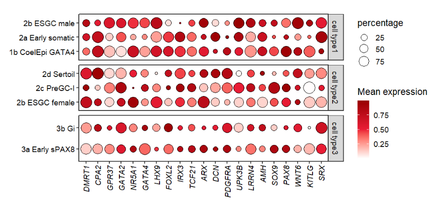
Trying to add point annotation:
# add to top
annoPoint2(object = pfacet,
annoPos = 'top',
aesGroup = T,
aes_x = 'gene',
aes_y = 'cell',
aesGroName = 'class',
myFacetGrou = 'cell type1',
ptSize = 2,
yPosition = 4.2)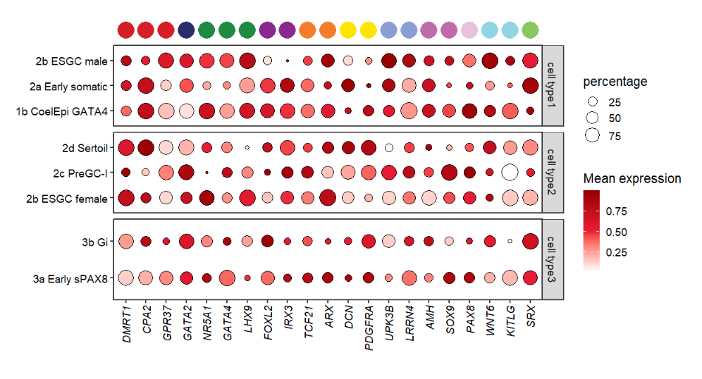
It seems that the annoPoint2 function works well! Here remember that you should supply the
XandYmapping variables with aes_x and aes_y. Also you need to point out which variable(aesGroName)and sub-facet group name(myFacetGrou)should be used to add annotation.
If you want to add to the bottom, just change the myFacetGrou:
# change cellGroup and add to botomn
annoPoint2(object = pfacet,
annoPos = 'botomn',
aesGroup = T,
aes_x = 'gene',
aes_y = 'cell',
aesGroName = 'class',
myFacetGrou = 'cell type3',
yPosition = -0.6,
ptSize = 2)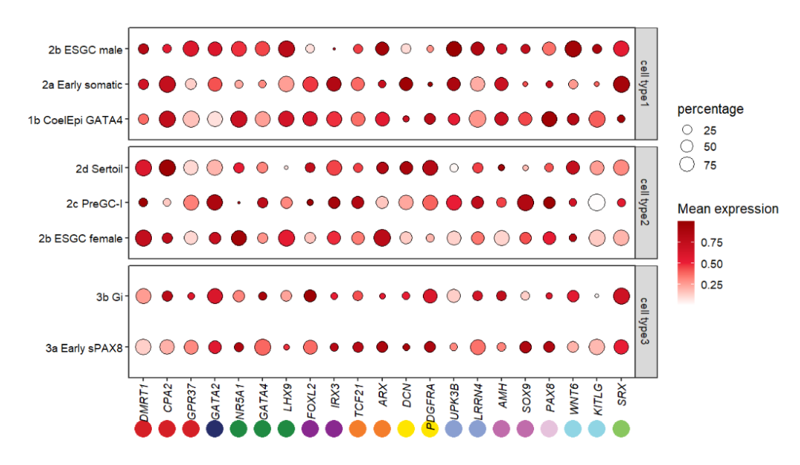
10.2.2 facet by class
Facet by another group:
# facet by class
pfacet1 <-
pdotfc +
facet_wrap(~class,
nrow = 1,scales = 'free_x') +
theme(axis.text.y = element_text(margin = margin(r = 1.2,unit = 'cm')))
pfacet1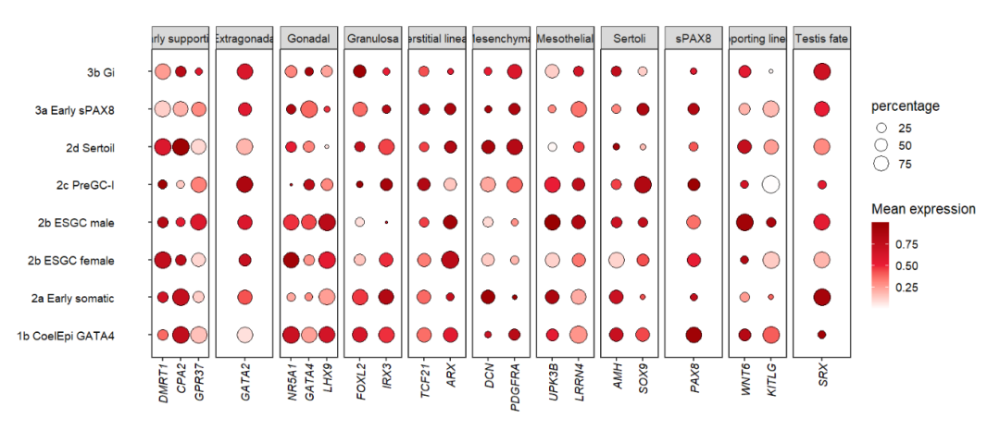
Adding to left:
# add to left
annoPoint2(object = pfacet1,
annoPos = 'left',
aesGroup = T,
aes_x = 'gene',
aes_y = 'cell',
aesGroName = 'cellGroup',
myFacetGrou = 'Early supporting',
ptSize = 2,
xPosition = -0.5,
pCol = rep(useMyCol('paired',3),c(3,3,2)))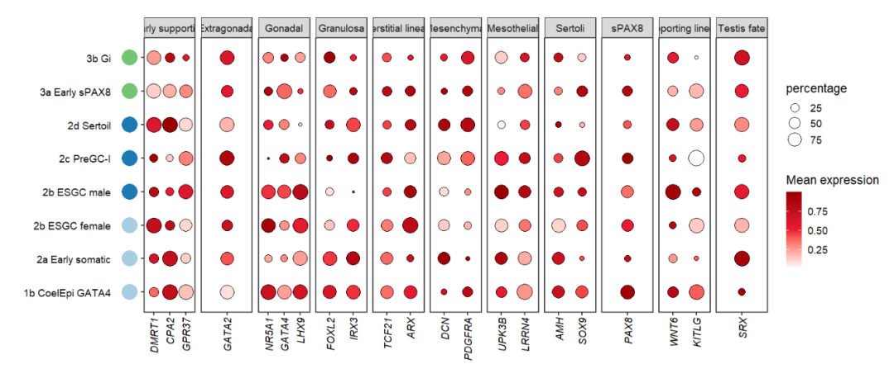
10.3 annoSegment
Let’s see examples for annoSegment.
10.3.1 facet by cellGroup
# facet by cellGroup
pfacet <-
pdotfc +
facet_wrap(~cellGroup,
ncol = 1,scales = 'free_y',
strip.position = 'right') +
theme(plot.margin = margin(t = 5,unit = 'cm'))
# add segment to top
annoSegment(object = pfacet,
annoPos = 'top',
aesGroup = T,
aes_x = 'gene',
aes_y = 'cell',
aesGroName = 'class',
myFacetGrou = 'cell type1',
yPosition = 4.2,
segWidth = 0.8,
lwd = 4,
mArrow = arrow(ends = 'both',length = unit(0.25,'cm')),
addText = T,
textRot = 45,
textHVjust = 0.5,
hjust = 0)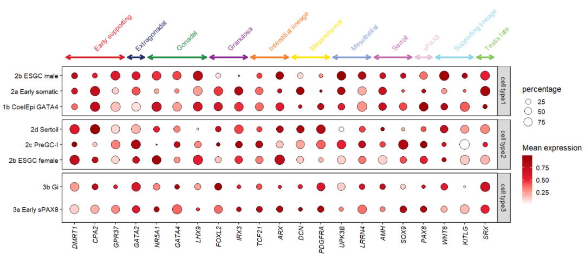
You can also add to the middle facet group:
# add segment to "cell type2" top
annoSegment(object = pfacet,
annoPos = 'top',
aesGroup = T,
aes_x = 'gene',
aes_y = 'cell',
aesGroName = 'class',
myFacetGrou = 'cell type2',
yPosition = 4,
segWidth = 0.8) +
theme(panel.spacing.y = unit(1,'cm'))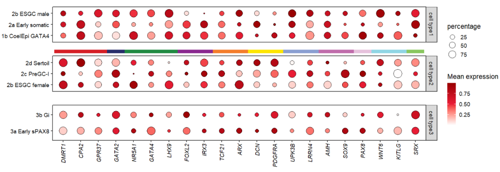
10.3.2 facet by class
# facet by class
pfacet1 <-
pdotfc +
facet_wrap(~class,
nrow = 1,scales = 'free_x') +
theme(axis.text.y = element_text(margin = margin(r = 1.2,unit = 'cm')))
# add segment to left
annoSegment(object = pfacet1,
annoPos = 'left',
aesGroup = T,
aes_x = 'gene',
aes_y = 'cell',
aesGroName = 'cellGroup',
myFacetGrou = 'Early supporting',
xPosition = -0.5,
segWidth = 0.8,
lwd = 4,
addBranch = T,
branRelSegLen = 0.8,
bArrow = arrow(length = unit(0.3,'cm')))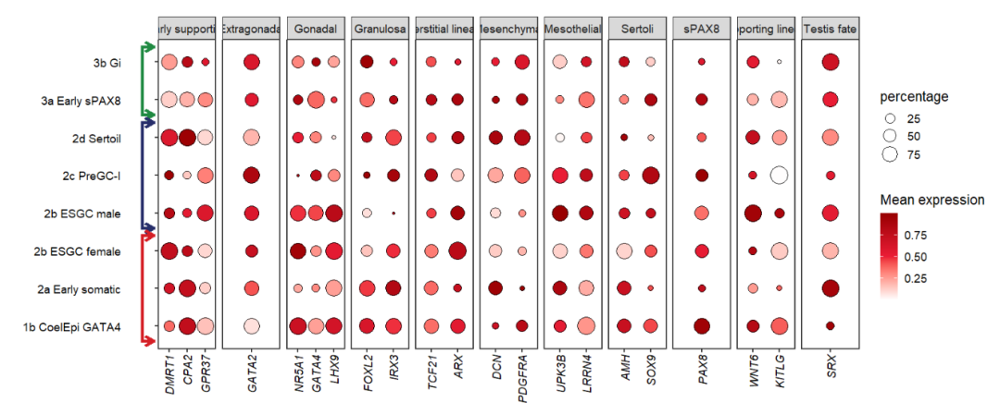
10.4 annoRect
Let’s see examples for annoRect.
10.4.1 facet by cellGroup
# facet by cellGroup
pfacet <-
pdotfc +
facet_wrap(~cellGroup,
ncol = 1,scales = 'free_y',
strip.position = 'right') +
theme(plot.margin = margin(t = 5,b = 4,unit = 'cm'),
axis.text.x = element_text(angle = 60,hjust = 1,vjust = 1))
# add rect to top
annoRect(object = pfacet,
annoPos = 'top',
aesGroup = T,
aes_x = 'gene',
aes_y = 'cell',
aesGroName = 'class',
myFacetGrou = 'cell type1',
yPosition = c(4,4.6),
rectWidth = 0.8,
pCol = rep('black',11),
lwd = 2,
addText = T,
textRot = 45,
textHVjust = 0.6,
hjust = 0)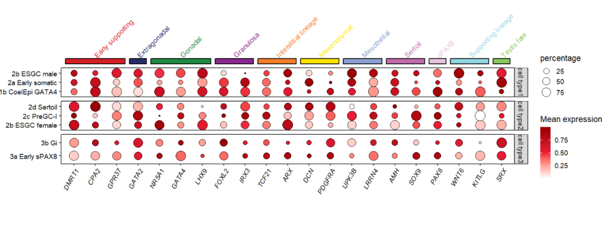
Adding to bottom:
# add rect to botomn
annoRect(object = pfacet,
annoPos = 'botomn',
aesGroup = T,
aes_x = 'gene',
aes_y = 'cell',
aesGroName = 'class',
myFacetGrou = 'cell type3',
yPosition = c(-1.2,0.4),
rectWidth = 0.9,
alpha = 0.5)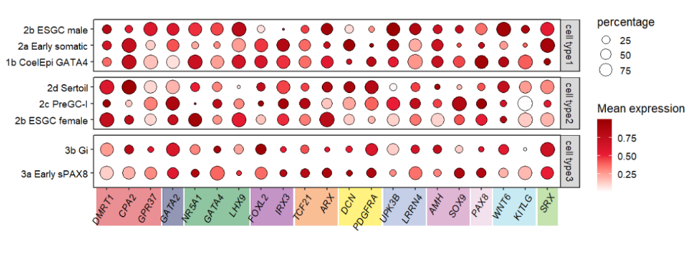
Roate the rect:
# add rotated rect to botomn
annoRect(object = pfacet,
annoPos = 'botomn',
aesGroup = T,
aes_x = 'gene',
aes_y = 'cell',
aesGroName = 'class',
myFacetGrou = 'cell type3',
yPosition = c(-1.5,0.3),
rectWidth = 0.9,
alpha = 0.5,
rotateRect = T,
rectAngle = 50,
rotatedRectShift = 0.75)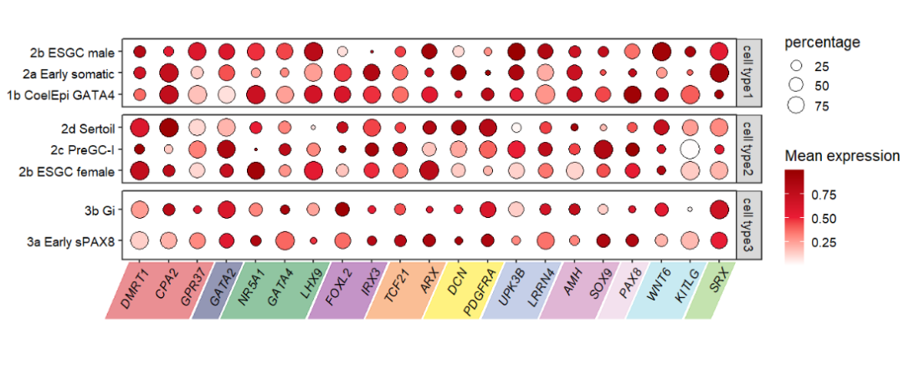
10.4.2 facet by class
# facet by class
pfacet1 <-
pdotfc +
facet_wrap(~class,
nrow = 1,scales = 'free_x') +
theme(axis.text.y = element_text(margin = margin(l = 1,unit = 'cm')))
# add to left
annoRect(object = pfacet1,
annoPos = 'left',
aesGroup = T,
aes_x = 'gene',
aes_y = 'cell',
aesGroName = 'cellGroup',
myFacetGrou = 'Early supporting',
xPosition = c(-6,0.2),
rectWidth = 0.9,
alpha = 0.3)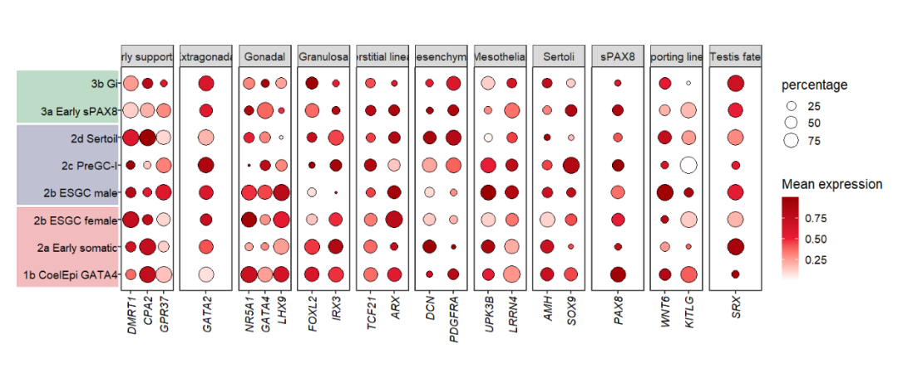
10.5 annoTriangle
Let’s see examples for annoRect.
10.5.1 facet by cellGroup
# facet by cellGroup
pfacet <-
pdotfc +
facet_wrap(~cellGroup,
ncol = 1,scales = 'free_y',
strip.position = 'right')
# add rect to top
annoTriangle(object = pfacet,
annoPos = 'top',
aes_x = 'gene',
aes_y = 'cell',
myFacetGrou = 'cell type1',
xPosition = c(1,21),
yPosition = c(4,4.6),
fillCol = c('blue','white','red'))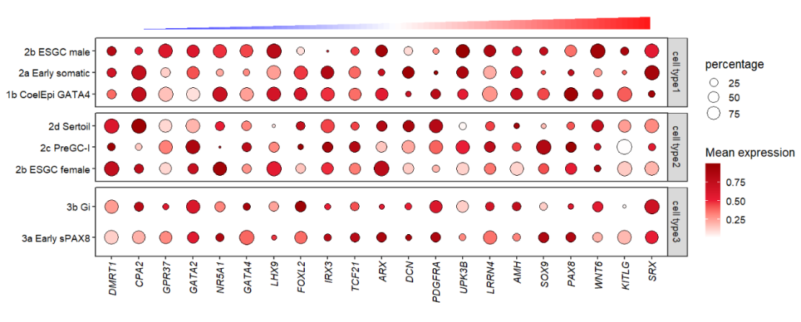